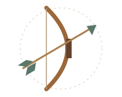

일곱 조각을 찾아 떠나는 여정
사라진 궁사의
활을 완성하라!
박물관 곳곳에 숨겨진 QR코드를 찾아
문제를 풀고 활과 화살의 구성품을 모두 모아보세요.

THE ARCHER’S LOST BOW
07
탐험 시작하기 총 7개의 아이템을 수집하세요.
어떤 QR부터 시작해도 좋아요.
탐험 기록은 이 브라우저에 자동으로 저장됩니다.
일곱 조각을 찾아 떠나는 여정
박물관 곳곳에 숨겨진 QR코드를 찾아
문제를 풀고 활과 화살의 구성품을 모두 모아보세요.

THE ARCHER’S LOST BOW
총 7개의 아이템을 수집하세요.
어떤 QR부터 시작해도 좋아요.
탐험 기록은 이 브라우저에 자동으로 저장됩니다.